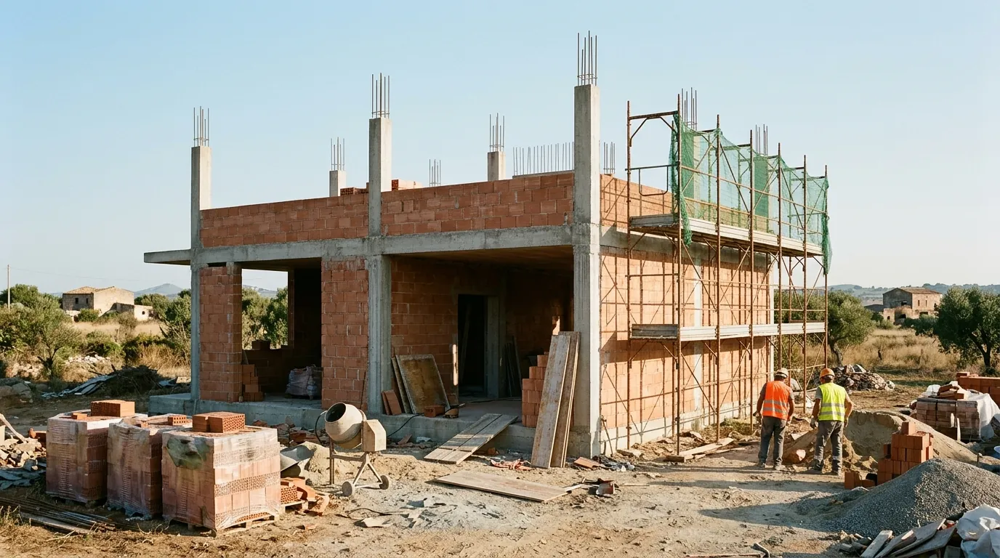
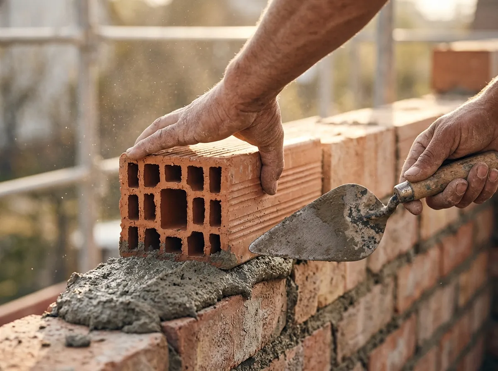
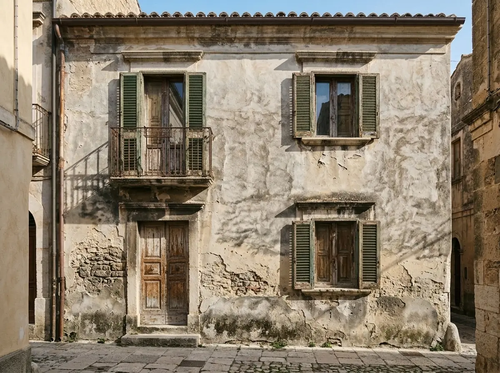
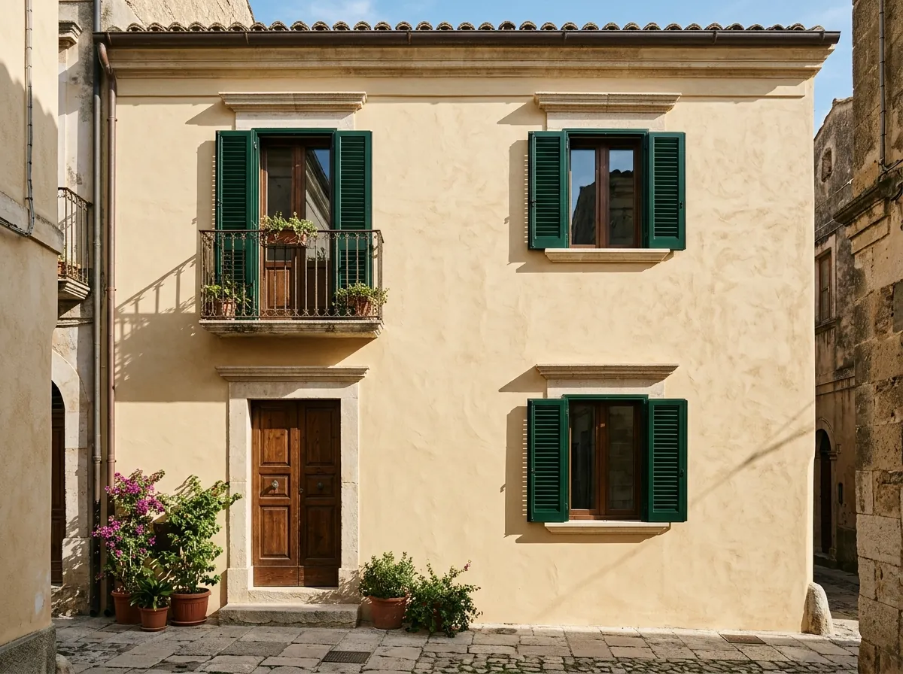

Impresa edile · Ragusa, Modica, Scicli
Costruiamo case nuove e rimettiamo in piedi quelle vecchie.
Nuove costruzioni, facciate in pietra e intonaci a calce, tetti e consolidamenti. Un capocantiere che risponde al telefono e ti manda le foto ogni settimana.
Cosa facciamo

- Nuove costruzioni
- Case singole e piccole palazzine, dallo scavo alle chiavi, con il tuo progettista o con i tecnici con cui lavoriamo.
- Facciate e intonaci a calce
- Recupero di prospetti in pietra e intonaci tradizionali nei centri storici, con i colori della zona.
- Tetti e coperture
- Rifacimento di tetti in coppi, isolamento e impermeabilizzazione di terrazzi che perdono.
- Consolidamento
- Cuciture di lesioni, cordoli, rinforzi di solai e murature indicati dall'ingegnere.
- Ristrutturazioni interne
- Demolizioni, nuove tramezzature, massetti, bagni e cucine con i nostri impiantisti.
- Opere esterne
- Muri a secco, cortili, rampe e recinzioni.
Passo passo
Una casa, strato dopo strato
Scorri: il disegno cresce come cresce il cantiere.
- Scavo e fondazioni
Tracciamo la casa sul terreno, scaviamo e gettiamo le fondazioni sul progetto dello strutturista.
- Struttura
Pilastri, travi e solai in cemento armato. Ogni getto ha le sue prove sui materiali.
- Murature
Tamponature in laterizio, vani di porte e finestre già nelle misure del progetto.
- Tetto
Copertura isolata e impermeabilizzata prima delle piogge d'autunno.
- Impianti e intonaci
Tracce per impianti, intonaci interni e cappotto o intonaco a calce fuori.
- Finiture e consegna
Pavimenti, infissi, tinteggiature. Pulizia del cantiere e consegna delle chiavi.
Prima e dopo
Trascina la linea. Facciata di una casa a schiera nel centro storico: intonaco nuovo a calce, persiane restaurate, davanzali in pietra sostituiti. Lavoro di esempio, foto generate con l'IA.


DopoPrimaCosa ricevi durante il lavoro
- Computo metrico voce per voce, prima di firmare
- Cronoprogramma con le settimane di ogni fase
- Foto del cantiere ogni venerdì su WhatsApp
- Pagamenti a stato di avanzamento solo sul lavoro fatto e verificato
I clienti vedono cantiere, documenti e scadenze anche dall'area gestionale (demo).
Chi siamo
Impresa di famiglia: il nonno faceva muri a secco in contrada, oggi [Nome del titolare] guida due squadre di muratori e un capocantiere. Teniamo aperti due o tre cantieri alla volta, non di più, così in ognuno c'è sempre qualcuno di noi.
Dove lavoriamo
Ragusa · Modica · Scicli · Ispica · Pozzallo · Santa Croce Camerina · Comiso · Vittoria
Spazio per i documenti veri dell'impresa: iscrizione alla Cassa Edile, DURC in corso di validità, patente a crediti per i cantieri, polizza decennale postuma per le nuove costruzioni.
Domande
Lavorate con il mio progettista?
Sì. Se non hai un tecnico, ti presentiamo architetti e ingegneri con cui lavoriamo da tempo: il progetto resta suo, il cantiere nostro.
Come funzionano i pagamenti?
Un acconto alla firma e poi a stato di avanzamento lavori: paghi solo le fasi finite e verificate dal direttore dei lavori.
Quanto dura una facciata?
Per una casa a schiera di due piani servono di solito tre o quattro settimane, ponteggio compreso. Dipende da quanto intonaco va tolto e dal meteo.
Posso venire in cantiere?
Quando vuoi, con il capocantiere e con le scarpe giuste. Ogni venerdì ricevi comunque le foto della settimana.
Seguite anche le pratiche?
Le pratiche edilizie le firma il tuo tecnico; noi prepariamo i documenti dell'impresa e la notifica preliminare del cantiere.
Raccontaci il lavoro
Ti richiamiamo per fissare un sopralluogo. Se hai foto o un progetto, li chiediamo dopo su WhatsApp.
- Telefono
- Numero di esempio
- Indirizzo di esempio
- Ufficio
- Via di esempio, Modica (RG)